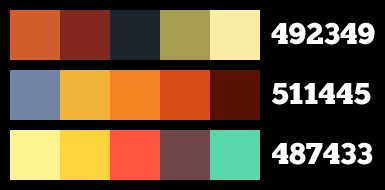

Maria's Party Invitations
A while back I created an invitation for Maria's birthday party. Inspired by a birthday card created by the incredibly talented Ben Schlitter, I wanted to add a personal touch to the invitations. I wanted something beyond the usual hand-lettering which let people know an invitation was hand-made, but didn't want it to look too amateurish. Granted, this invitation was technically computer-made, but you know what I mean. With a Mexican theme to the party, I went to work.
Here's the (slightly modified) finished invitation:
Kuler came to the rescue again with the color theme. I picked out two alternate schemes, but chose one I felt was more workable considering the elements of the card. I made some adjustments to work in some of the more subtle elements. Of the three listed here, the middle option was my final choice (called “Aloha” by the creator).
The rest of the details to this work:
- Chunk was the winning typeface again. I promise not to use it for my next piece, but it was just what I needed.
- I got the texture from one of BittBox's Free Texture Tuesday postings. It gave a weathered feel to the piece, without ruining some of the detail I needed. I wanted it to play heavier in certain parts than in others (it was vital to have the party details clear, but the background, or candle could be as beat-up as anything).
- I ended up double-layering the type behind and in front of the texture. I put them all behind the texture, then put a copy of the same type in front, and adjusted their opacity so some of the texture would come through, yet not be dominating.
- The background pattern is from... BGPatterns.com. Who would have thought you could get something like a background pattern from that site. Go figure. I wanted the unaltered version of a pattern, and as large as possible so I could use it in print (as opposed to the web, which doesn't require such high fidelity).
- I drew the candle. I don't think it's anything special, but I didn't need it to be. It communicated the nature of the party (or the vigil) very easily.
- I printed the invitations on some decent card stock (ideally they would have been super-heavy stock, but I couldn't justify the cost), and bundled them with an equally-heavy piece of brown kraft paper, in an envelope of the same material.
Add a mariachi band, piñata, pin the tail on the donkey, trivia, tasty food (and super-simple catering), people we love, and the guest of honor... and it was a party to remember.